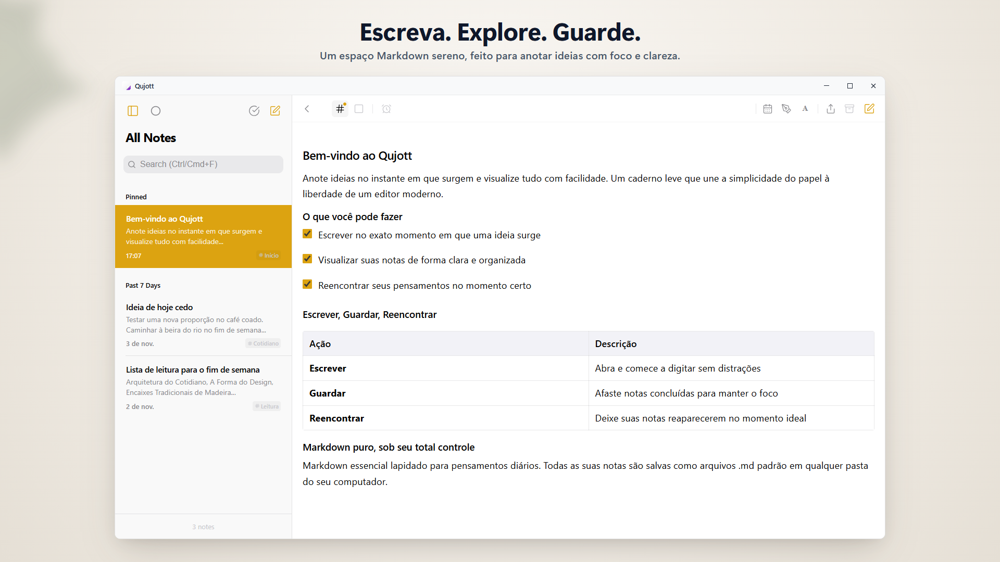
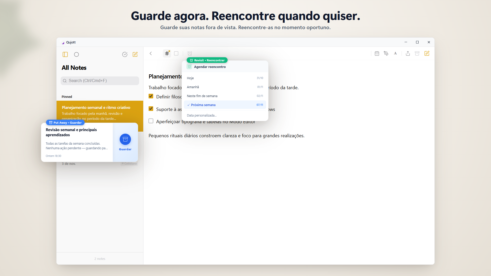
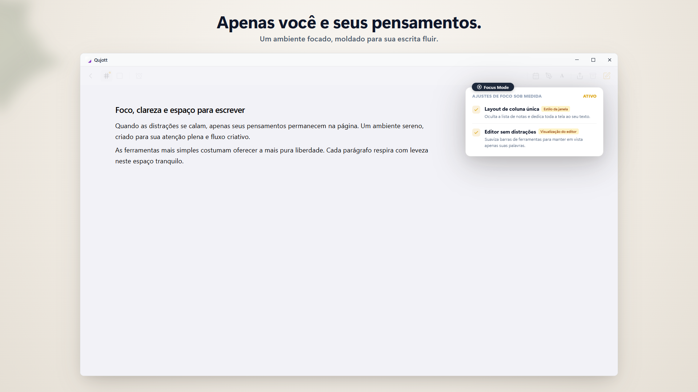
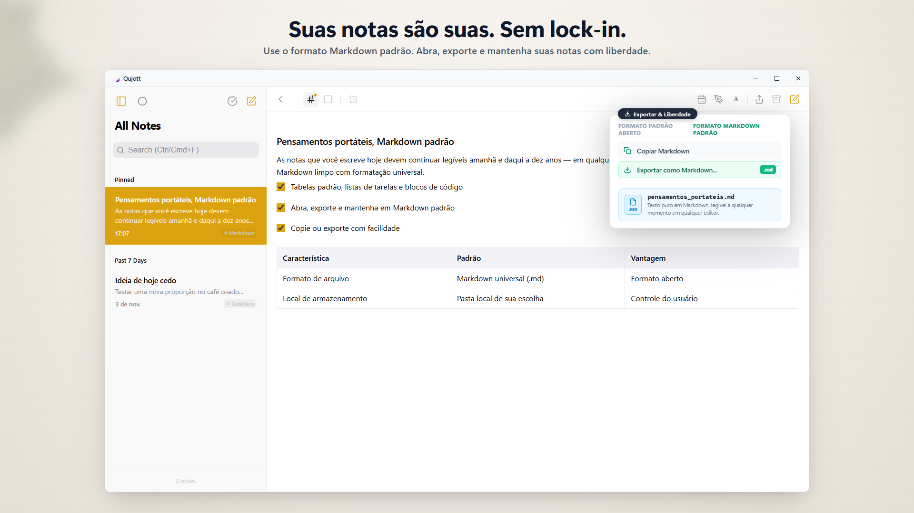
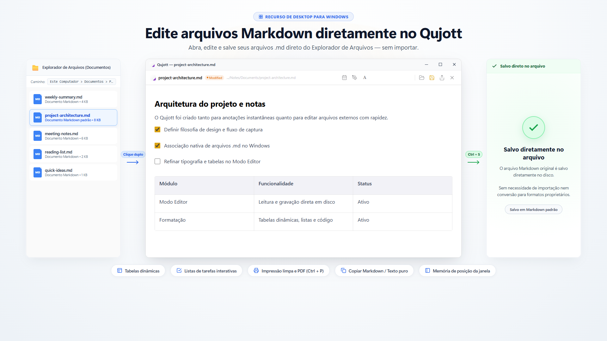
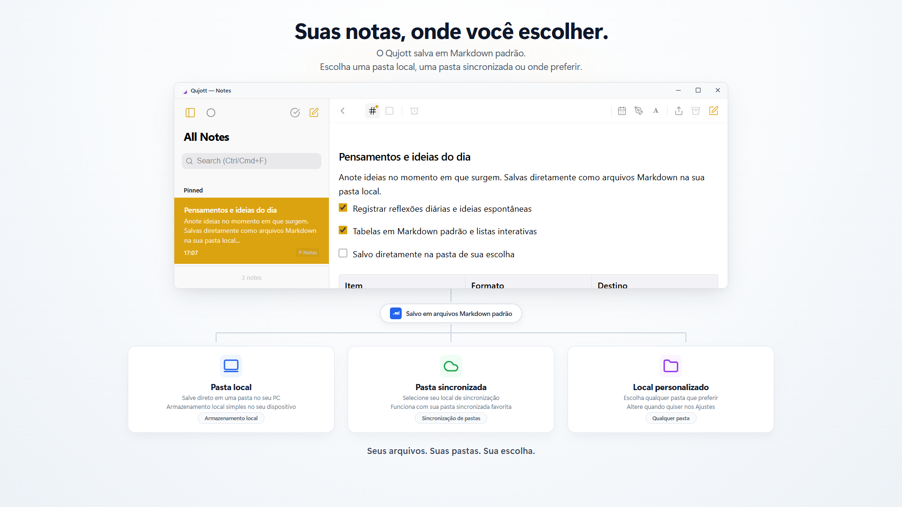
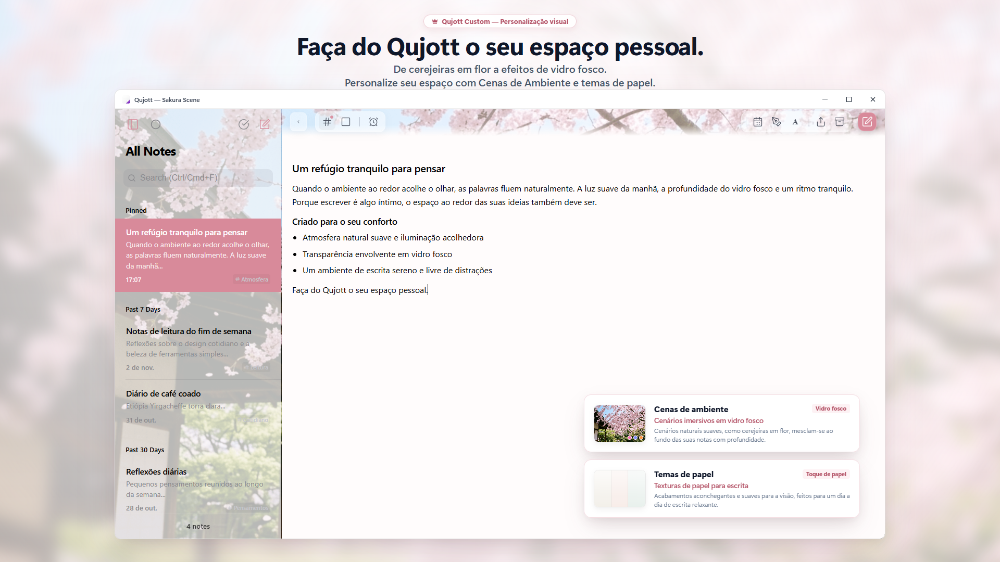
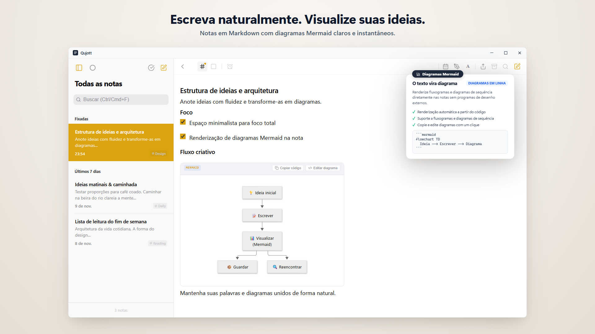
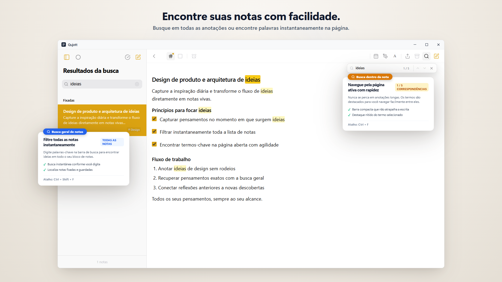

Qujott
Anote ideias assim que surgirem,
e consulte-as quando quiser.
O Qujott combina a simplicidade e a legibilidade de um bloco de notas com a liberdade e versatilidade de um editor de texto.
Organize depois. Mantenha seus pensamentos por perto.
Compatível com Markdown padrão. Salve e edite suas notas como arquivos de texto simples onde preferir.

Um espaço sereno de dois painéis que mantém suas ideias e notas sempre à vista
Como um bloco de papel ao lado do seu teclado.
O Qujott não é um banco de dados complexo nem um sistema pesado de tarefas.
Como um bloco de papel sobre a mesa, foi criado para uma única finalidade: escrever no instante exato em que um pensamento surge.
Sem pastas obrigatórias de antemão ou etiquetas forçadas.
Anote o que estiver na sua mente e mantenha por perto. Você pode organizar com calma mais tarde.
Guarde notas com suavidade e reencontre-as no momento certo.
Concluiu uma nota? Guarde-a (Put Away) sem apagá-la para manter sua visão limpa.
Use o Revisit para fazer a nota retornar hoje, amanhã ou na próxima semana. Sem alarmes invasivos: um reencontro natural no momento ideal.

Guarde notas para focar no presente e revisite-as quando o momento chegar
Mergulhe por completo na sua escrita.
Mude para o modo de painel único e elimine barras laterais e distrações visuais.
Um ambiente calmo e enxuto construído puramente para pensar e redigir com total clareza.

O Focus Mode remove distrações para você se dedicar apenas às palavras
Suas palavras pertencem a você.
Todas as notas no Qujott são salvas como arquivos Markdown padrão (.md).
Sem formatos proprietários ou aprisionamento. Abra, edite e exporte suas notas livremente em qualquer editor.

Notas salvas em Markdown padrão (.md). Total liberdade para ler, mover e editar
Abra e edite arquivos Markdown existentes diretamente.
Abra arquivos Markdown existentes diretamente no Qujott, edite-os e salve no arquivo original com Ctrl+S.
Sem necessidade de importação ou conversão de formato. Use o Qujott como seu editor Markdown ágil do dia a dia.

Abra e edite arquivos Markdown diretamente no Qujott e salve no original (Editor Mode)
Você escolhe onde suas notas vivem.
Escolha qualquer pasta no seu computador para armazenar suas notas: pastas locais, nuvem sincronizada ou unidades externas.
Você pode usar o Qujott sem precisar criar uma conta na nuvem.

Escolha pastas locais, nuvem sincronizada ou discos externos para guardar suas notas
Transforme seu ambiente de escrita.
Personalize seu espaço com Cenas de Ambiente imersivas (como Sakura), profundidade de vidro fosco e temas inspirados em papel (Qujott Pro, compra única).
Com ajuste de escala da interface (80% a 160%), adapte o Qujott confortavelmente a qualquer tela.

Um espaço de escrita aconchegante. Personalize com temas de ambiente e escala da interface.
Escreva naturalmente. Visualize suas ideias.
Como extensão natural da escrita em Markdown, renderize fluxogramas, diagramas de sequência e mapas mentais Mermaid na mesma nota.
Insira modelos rapidamente pelo menu de formatação, sem precisar abrir outro aplicativo de desenho.

Notas em Markdown simples com diagramas Mermaid claros exibidos diretamente na nota
Reencontre seus pensamentos com facilidade.
Filtre entre todas as suas anotações pela lista de notas (Ctrl+Shift+F) ou vá direto ao termo correspondente dentro da nota aberta (Ctrl+F).
Volte rapidamente a qualquer ideia já anotada quando precisar.

Busca global em todas as notas (Ctrl+Shift+F) e busca rápida dentro da nota atual (Ctrl+F)